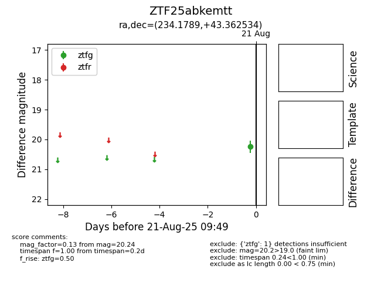

Target ZTF25abkemtt at 2025-08-21 09:49, see:
FINK: fink-portal.org/ZTF25abkemtt
Lasair: lasair-ztf.lsst.ac.uk/objects/ZTF25abkemtt
ALeRCE: alerce.online/object/ZTF25abkemtt
alt names
ZTF25abkemtt (ztf,alerce)
coordinates:
equatorial (ra, dec) = (234.1789,+43.36253)
galactic (l, b) = (69.9605,+53.03845)
photometry
last ztfg=20.24
1 ztfg detections
